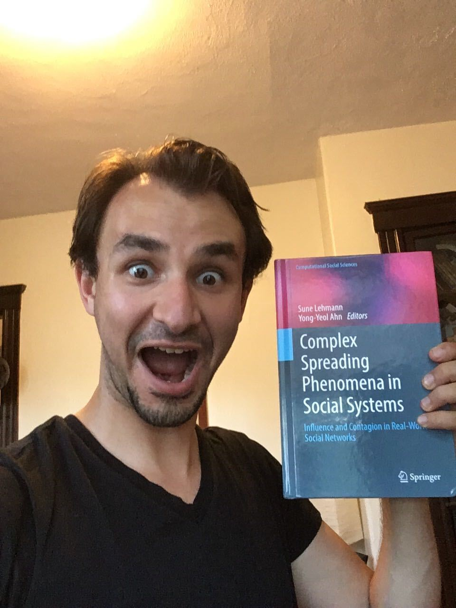

Math Models of Hierarchy: Dominance, Dynamics, and Data
Smith College | April 6th, 2023
Hi! I’m Phil.
I am an
applied mathematician
and
STEM educator.
I like…
- Mathematics of complex systems
- Network science
- Ethics and technology
- Traditional martial arts
- Tea
- Star Trek: Deep Space 9
- Effective pedagogy
I’m a new professor in the department of computer science at Middlebury College in Middlebury, Vermont.

I teach machine learning, discrete math, introductory computing, and network science.
 


Collaboration Origin Story
Complex Networks Winter Workshop 2019


18 Months Later…

Mari Kawakatsu
UPenn and Princeton 
Nicole Eikmeier
Grinnell
Dan Larremore
CU Boulder

A model of prestige-based hierarchy
A state of the model is a matrix \(\mathbf{A}^{(t)} \in \mathbb{R}^{n\times n}\) of endorsements.
\(a_{ij}^{(t)}\) is the weighted number times that \(i\) has endorsed \(j\).
At each timestep, we update \(\mathbf{A}^{(t)}\): \[ \mathbf{A}^{(t+1)} = \lambda \mathbf{A}^{(t)} + (1-\lambda) \Delta^{(t)} \] where \(\Delta^{(t)}\) is the matrix of new endorsements.
\(\lambda\) acts as the rate of exponentially decaying system memory.

New Endorsements
Agents endorse other agents that they perceive as being of high prestige.
Prestige is measured by a score function \(\sigma: \mathbf{A}^{(t)} \mapsto \mathbf{r}^{(t)} \in \mathbb{R}^n\).
Each agent \(i\) computes a utility of endorsing agent \(j\) in terms of the score vector \(\mathbf{r}^{(t)}\). Our utility is: \[ u_{ij}(\mathbf{r}) = \beta_1 s_j + \beta_2 (r_i - r_j)^2. \]
Agent \(i\) endorses \(j\) at time \(t+1\) with probability \[ p_{ij}^{(t)} = \frac{e^{u_{ij}(\mathbf{r}^{(t)})}}{\sum_j e^{u_{ij}(\mathbf{r}^{(t)})}} \]
All new endorsements get collected into update matrix \(\Delta^{(t)}\). Then we do our main update: \[ \mathbf{A}^{(t+1)} = \lambda \mathbf{A}^{(t)} + (1-\lambda) \Delta^{(t)}\;. \]
We allow \(m\in \mathbb{Z}\) endorsements per round.
Theorem: KCEL ’21
Consider the deterministic function \[\mathbf{f}(\mathbf{r}, \mathbf{A}) = \lim_{\lambda \rightarrow 1} \frac{\mathbb{E}[\mathbf{r}|\mathbf{A}] - \mathbf{r}}{1 - \lambda}\;.\]
This function has an egalitarian fixed point, where all ranks are the same. This point fixed point is linearly stable iff \(\beta_1 < \beta_1^c\):
\[\beta_1^c = \begin{cases} 2\sqrt{\frac{n}{m}} &\quad \text{Root-Degree} \\ 1/\alpha_p &\quad \text{PageRank} \\ 2 + \alpha_s\frac{n}{m} &\quad \text{SpringRank}. \end{cases}\]
Linear Stability
Heuristically, a fixed point \(\mathbf{x}_0\) of some dynamics is stable if, when you perturb the the system to some nearby point, it eventually comes back to \(\mathbf{x}_0\).
 Image credit: Desmond Winterborne
Image credit: Desmond Winterborne
Are we in the hierarchical regime?
Theorem from before: Egalitarianism is stable iff \(\beta_1 < \beta_1^c\), where
\[\beta_1^c = \begin{cases}
2\sqrt{\frac{n}{m}} &\quad \text{Root-Degree} \\
1/\alpha_p &\quad \text{PageRank} \\
2 + \alpha_s\frac{n}{m} &\quad \text{SpringRank}.
\end{cases}\]
Math PhD exchange: bistable \(-\) both egalitarianism and hierarchy are possible.
Parakeets + Newcomb Frat: hierarchical.

Ranks ⟳ Decisions
We wrote a simple math model of hierarchies emerging from feedback loops.
Feedback loops can generate stable hierarchies, even when are no meaningful differences between agents.
Some systems are near criticality: small interventions could help to promote equality and equity.
Two Ways to Start Projects
Idea First
“Here’s a cool idea!
What/who do I need to do in order to achieve this?”
People First
“Here are some people I like!
What cool things can we achieve together?”
I do both of these, but I have the most fun when I start with people.


Reflections on interdisciplinary applied math being a human in science
Find people worth your trust, and trust them.
Be thankful, and say so.
Check in often.
Work with your heart, not just your brain.
Take time to see things from multiple angles.
Laugh. A lot.
Thanks!
Awesome Collaborators
Mari Kawakatsu
UPenn and Princeton
Nicole Eikmeier
Grinnell
Dan Larremore
CU Boulder
Complex Networks Winter Workshop 2019
And Most Importantly…